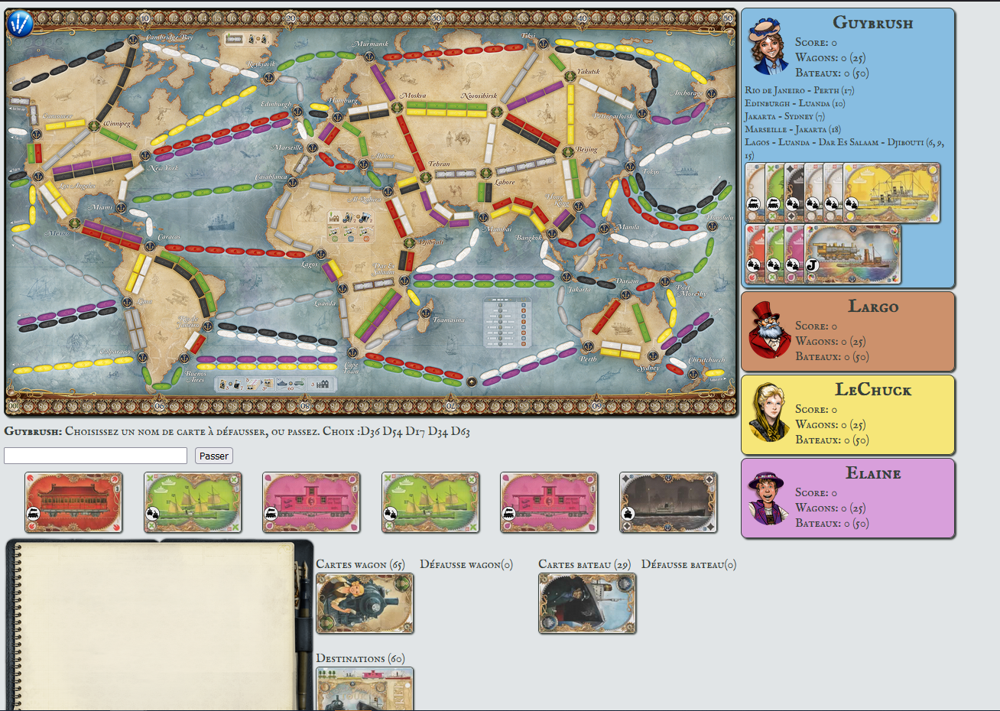
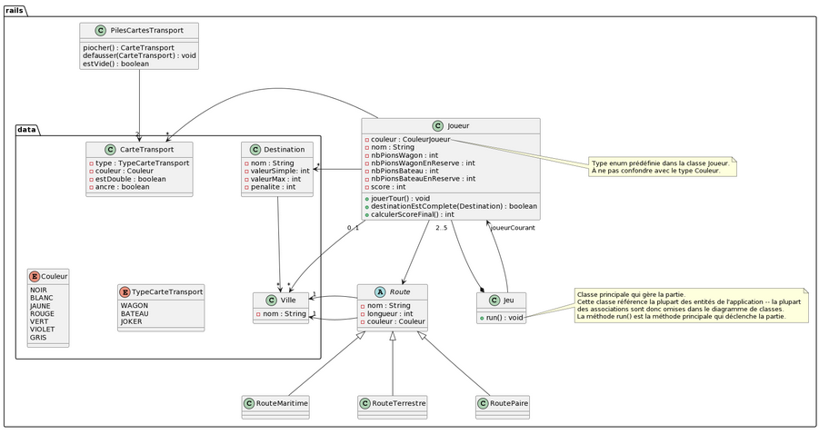
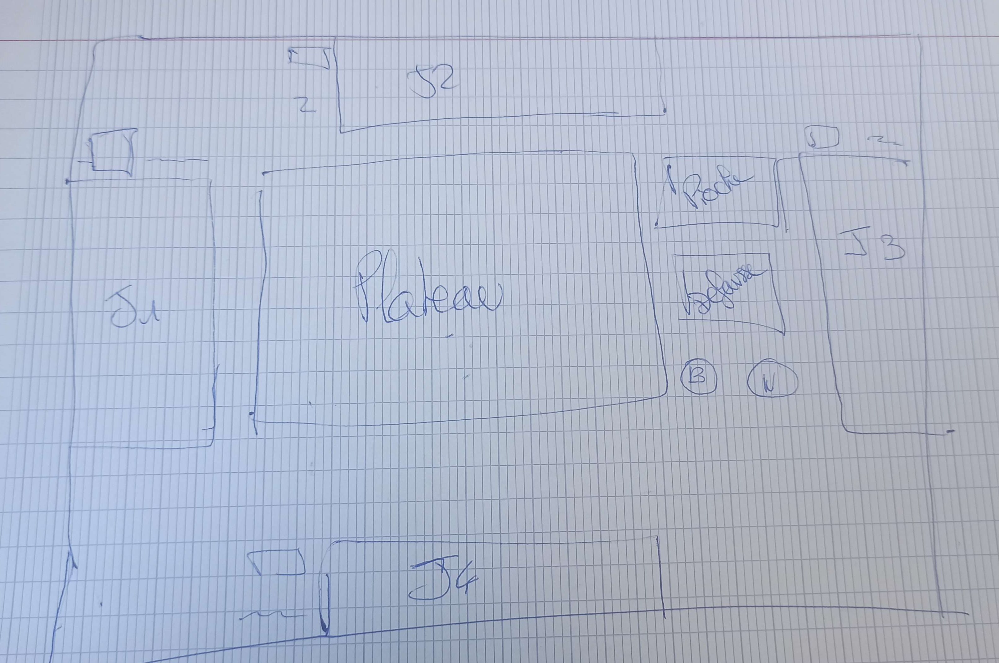
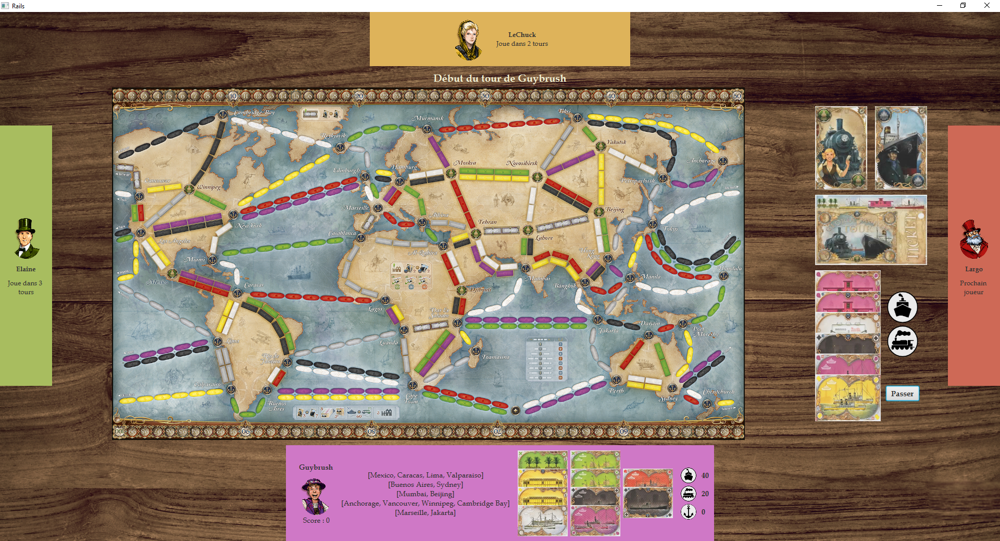

Cette SAE* se concentre sur le développement informatique et les mathématiques. Lors de celle-ci, nous avions dû en duo :
Qu'est ce que les Aventuriers du Rails : Autour du monde ?
Les Aventuriers du Rails : Autour du monde est un jeu de stratégie dont le but est de relier plusieurs villes entre elles via routes terrestres (trains) ou maritimes (bateaux). Attention pendant que vous remplissez vos destinations, les autres joueurs peuvent s'amuser à vous bloquer le chemin pour vous embeter. Le jeu est accesible à un grand public, adultes ou plus jeunes.
Lire les règles: ici
*SAE = Situation d'Apprentissage et d'Evaluation, c'est un projet qui se passe dans le Cadre du BUT (Bachelor Universitaire de Technoloqie). Les SAE sont généralement découpées en livrable (listés ci-dessus).
Cette SAE a eu lieu lors du premier semestre du BUT Informatique et s'applique à deux UE "Réaliser un développement d'application" et "Optimiser des applications qui se concentrent, respectivement, sur le développement informatique et l'optimisation et les mathématiques.
La SAE s'est déroulée sur 3 mois, entre le mois de Mars et le debut du mois de Juin.
Tout le développement s'est fait en Java en utilisant la POO (Programmation Orientée Objet).
Le développement de l'interface graphique s'est fait à l'aide de la bibliothèque JavaFX.
Pour la gestion du projet, nous avons utilisé le GitLab de l'IUT.
Pour cette partie, il nous était fourni une interface graphique du jeu en web et déjà une structure du code. Nous ne sommes donc pas partis de 0.
Nous devions donc coder tout ce qui composé le jeu. Pour ma part, je me suis concentré sur :
Tant dit que nous avons collaboré sur :
Le plus compliqué dans ce livrable était de penser et tester toutes les exceptions des règles et les possibilités (même infimes) de comment pouvait un joueur.
Uml du livrable :
Cette partie se concentrait donc sur la Théorie des Graphes vu en cours de mathématiques.
Dans le jeu, cela permettait donc aux joueurs d'établir des stratégies plus complexes et élaborées grâce à des concepts mathématiques.
Dans ce livrable, chaque objet Route avait une Arête correspondante et les sommets du graphe correspondait aux villes du plateau.
Nous avons donc travaillé sur plusieurs algortihmes tel que savoir si deux graphes sont isomorphes, si deux sommets sont voisins, l'algorithme de Dijkstra permettant de renvoyer au joueur de savoir la dsitance minimale entre deux villes et, avec une fonction complémentaire, quel était le trajet optimisé pour arriver à une ville.
Ce livrable de la SAE était la partie qui m'intéressait le plus du projet.
Même si le temps qui nous était donné (3 semaines) était très contraignant, nous avions fait une "maquette" nous permettant de concrétiser notre idée.
L'idée derrière cette maquette était de reproduire une sensation de table de jeux avec 2 à 4 personnes autour permettant aux joueurs d'avoir une impression de jouer dans la "vraie vie" (d'où l'utilisation d'un fond d'écran style table en bois).
Au milieu se trouve le plateau, où à chaque fois qu'un joueur prend une route des pions de sa couleur apparaissent. Sur le côté du plateau, vous trouverez les différentes pioches.
Le joueur du bas est le joueur courant et ils tournent dans le sens des aiguilles d'une montre.
Sur la vue du joueur courant, on peut y voir son nom et son score, les destinations qu'il doit compléter, les cartes, les pions et les ports qu'il possède.
Si le joueur courant veut voir des informations sur un autre joueur, il suffit qu'il passe la souris au-dessus du joueur voulu pour voir apparaitre les destinations qu'il a à compléter (afin de le bloquer)
Ce projet m'a permis de voir comment coder un jeu. Il m'a aussi permis de renforcer mes compétences en Java et en POO (utilisation de l'héritage).
Ma partie préférée était la construction de l'interface graphique, même si JavaFX n'est pas la meilleure bibliothèque pour coder cela.
C'est un projet dont je me souviendrai longtemps que ce soit par sa difficulté ou l'amusement que j'ai pu avoir à coder toutes les étapes d'un jeu que je ne connaissais pas.
Liens GitHub vers :